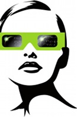

Events and workshops that deal with Macaulay2 and related topics
The future:
-
"Applied Macaulay2" tutorials at
Georgia Tech, organized by Thomas Kahle and Anton Leykin, July 27-29, 2017.
-
Macaulay 2 Workshop
at the Max Planck Institute for Mathematics in the Sciences (MIS) in Leipzig,
organized by Heather Harrington, Eliana Duarte Gelvez, and Thomas Kahle,
June 4 - 8, 2018.
The past:
-
Stillman's Conjecture and other Progress on Free Resolutions,
a workshop at Berkeley
organized by David Eisenbud, Sonja Mapes, Hal Schenck, Branden Stone,
David Swinarski, and Amelia Taylor, July 17-21, 2017.
-
A Macaulay2 Day
at the Fields Institute, organized by Greg Smith, October 21, 2016.
-
A Macaulay2 workshop in
Warwick, UK, organized by Thomas Kahle and Diane Maclagan, May 23 - 26, 2016.
-
A Macaulay2 workshop in
Salt Lake City, Utah, organized by Adam Boocher, Karl Schwede, and Amelia Taylor, May 7 - 10, 2016.
-
A Macaulay2 workshop in
Boise, Idaho, organized by Zach Teitler, Hiro Abo, and Frank Moore, May 27 - 30, 2015.
-
A workshop on Symbolic and Numerical Methods for Tensors and Representation Theory, organized by
Cynthia Vinzant, Alessandra Bernardi, Anton Leykin, Luke Oeding, and Claudiu Raicu,
at the Simons Institute, Berkeley, California, November 18-21, 2014.
-
The 2014 Macaulay2 School and Research Meeting, organized by
Sonja Mapes and Hal Schenck,
at University of Illinois Urbana-Champaign, June 16-20, 2014.
-
A Macaulay2 workshop, organized by
Sonja Mapes, Frank Moore, and David Swinarski,
at the University of California, Berkeley, in Berkeley, California,
January 6 - 10, 2014.
-
A minisymposium called Software
for Algebraic Geometry: Macaulay2, organized by Greg Smith, at the
SIAM
Conference on Applied Algebraic Geometry 2013,
Colorado State University, Fort Collins, Colorado, USA, August 1-4, 2013.
-

A workshop entitled Syzygies
in Berlin, May 27-31, 2013, jointly organized by Freie
Universität Berlin and Humboldt Universität zu Berlin, with a nice
poster.
-
A Macaulay2 Day was held at MSRI
February 7, 2013, organized by Eisenbud, Stillman, and Grayson. Here is the
resulting wiki.
-
A Macaulay2 workshop
in Winston-Salem, North Carolina at Wake Forest University,
Sunday, August 5, 2012 through Thursday, August 9, 2012,
organized by Frank Moore and Amelia Taylor,
and funded by the National Science Foundation and the National Security Agency.
Here is the resulting wiki.
-
Algebraic Geometry for Applications, at Georgia Tech,
in Atlanta, Georgia, June 18 through July 6, 2012, organized by Anton
Leykin, Greg Smith, and Josephine Yu, and funded by the IMA.
-
A Macaulay2 workshop
in Minneapolis at the
The Institute for Mathematics and its Applications (IMA),
Monday, July 25, 2011, through Friday, July 29, 2011,
organized by Anton Leykin and Sonja Petrović,
and funded by the IMA
and by the National Science Foundation through grant NSF DMS 10-02171.
-
A Macaulay2 workshop in Göttingen
at the Courant Center for Higher Order Structures,
Monday, February 28 through Friday, March 4, 2011,
organized by Amelia Taylor and Hans-Christian v. Bothmer,
and funded by the Deutsche Forschungs Gemeinschaft (German Research Council).
-
A Macaulay2 workshop at Colorado
College in Colorado Springs, Colorado, Sunday, August 8, 2010 through
Thursday, August 12, 2010, organized by Amelia Taylor, and funded by the
National Security Agency through a grant and by the National Science Foundation through grant
NSF DMS 09-64128 for $22768.
-
A Macaulay 2
workshop in Berkeley, California, Friday, January 8, 2010 through
Tuesday, January 12, 2010, organized by Amelia Taylor and Hirotachi Abo
with David Eisenbud, Daniel R. Grayson, and Michael E. Stillman, and
funded by: the National Security Agency through grant
H98230-09-1-0111; and by the National Science Foundation through grant
NSF DMS 09-64128 for $22768.
-
Implementing
algebraic geometry algorithms, October 26 to October 30, 2009, a workshop taking
place at the American Institute of Mathematics (AIM), Palo Alto,
California, and funded by it and by the National Science Foundation;
organized by Hirotachi Abo, Anton Leykin, Sam Payne, and Amelia Taylor.
For details about participants and their contributions
see details.
-
Sage Days 14: Sage and Macaulay2 for Algebraic Geometry Experimentation:
MSRI page,
Sage page,
March 10, 2009 to March 12, 2009.
-
Macaulay 2 day, Using Macaulay 2 in your research, February 03, 2009,
organized by Ravi Vakil (Stanford University), Gregory G. Smith (Queen's University) , Mike Stillman (Cornell University).
- A Macaulay2 workshop in Snowbird, Utah,
Saturday, June 28, 2008 to Thursday, July 3, 2008, organized for us by Amelia Taylor.
See the Macaulay2 wiki for details about what happened.
- A Macaulay2 conference in Ithaca,
March 16-19, 2008.
-
Software for Algebraic Geometry,
October 23 - 27, 2006, The Institute for Mathematics and its Applications, Minneapolis.
-
Workshop on Computational and Combinatorial Commutative Algebra,
July 24-August 4, 2006, Fields Institute, Toronto.
-
Computational and algorithmic aspects of algebra and arithmetic, Arizona Winter School 2006,
March 11-15, 2006, The University of Arizona.
-
Learning Stacks and Computational Methods through Problem-Solving, June 12-15, 2002
University of Illinois at Urbana-Champaign.